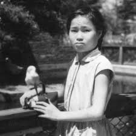
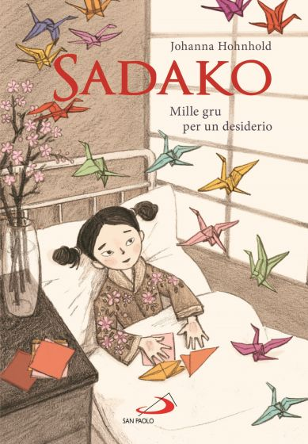

Sadako Sasaki
Mille gru di carta per una preghiera universale.
La Vita
Sadako Sasaki nasce ad Hiroshima nel 1943. All'età di soli due anni, il 6 agosto 1945, si trova a circa due chilometri dall'esplosione della bomba atomica. Sopravvissuta all'impatto, cresce come una bambina atletica e vivace, finché nel 1954 i primi segni della leucemia — nota come "la malattia della bomba" — iniziano a manifestarsi.
Le Mille Gru
Mentre è ricoverata in ospedale, Sadako viene a conoscenza della leggenda delle mille gru: chiunque riesca a piegare mille origami a forma di gru vedrà esaudito il proprio desiderio. Sadako inizia a piegare gru freneticamente, pregando per la propria guarigione e, col tempo, per la pace del mondo intero. Muore nell'ottobre del 1955.

L'Eredità
È oggi l'icona mondiale del disarmo nucleare. Al Children's Peace Monument di Hiroshima, milioni di gru colorate arrivano ogni anno da ogni parte del pianeta in suo onore, portando avanti il suo grido: "Pace nel mondo".

Copertina"Mille gru per un desiderio"
La graphic novel di Johanna Hohnhold (sottotitolo "Mille gru per un desiderio") ripercorre con estrema delicatezza la storia di Sadako. L'opera è fondamentale per comprendere come un piccolo gesto — piegare un foglio di carta — possa diventare un potente strumento di speranza e consapevolezza storica.